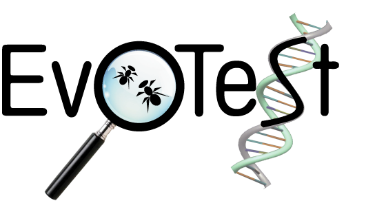
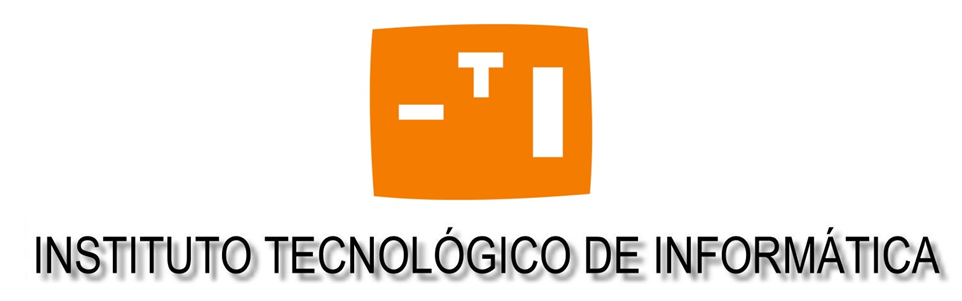
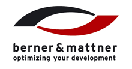

Prizes
There are several prizes to be won at the workshop:- 1000 Euro (one thousand) for the Best paper by a student (decided by the programme committee)
- Awarded to Shin Yoo for the paper "Measuring and Improving Latency to Avoid Test Suite Wear Out"
- 100 Euro (one hundred) for the Best short paper (decided by the programme committee)
- Awarded to ThanhVu Nguyen et al for the paper "Using Execution Paths to Evolve Software Patches"
- 100 Euro (one hundred) for the Best presentation (decided by workshop participants)
- Awarded to ThanhVu Nguyen et al for the paper "Using Execution Paths to Evolve Software Patches"
Prizes are sponsored by the EvoTest project (http://evotest.iti.upv.es/), the Instituto Tecnologico de Informatica and the following companies: Daimler, RILA Solutions, Berner & Mattner Systemtechnik GmbH and European Dynamics.
  